Tamil: Ada maruthu, Peikadukai, Pekarakai, Pilla marudu, Pulvai, Pu marudu, Ven maruthu, Veda marudu
Malayalam: Maruthu, Maruthi, Peimaruthu, Pemaruthu, Pemarutu, Pilemardu, Pillamarda, Pillai maruthu, Poomarda, Poomardu, Poomarida, Poomurda, Pulamarada, Pulla maruthu, Pullamarutu, Pumarda, Pumardu, Pumarutha, Pumarutu, Vella maruthu, Vemmaruthu, Ven maruthu
Kannada: Hanalu, Honal, Hongal, Honagalu, Honalu, Hulive,Huluvemara, Hunagalu, Maruva, Matti, Ulvi
Vernacular names:
Images
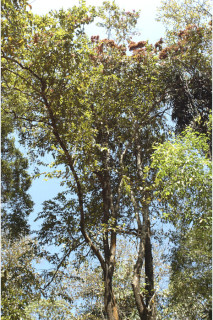
 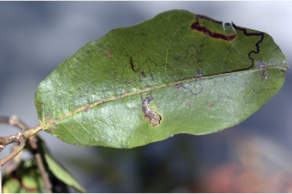
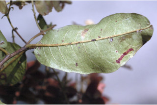
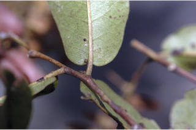
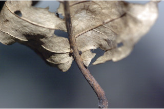
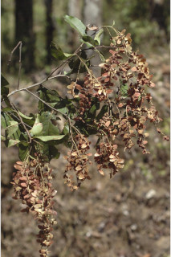
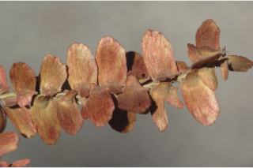
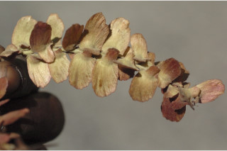
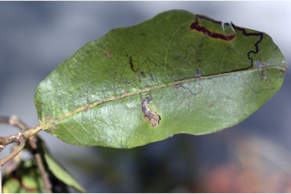
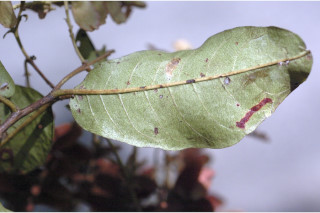
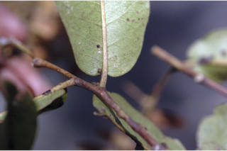
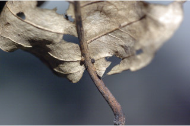
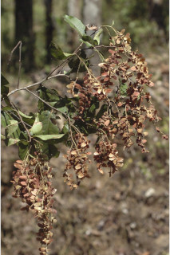
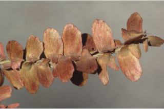
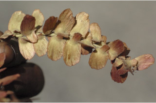
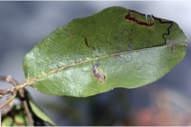
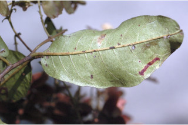
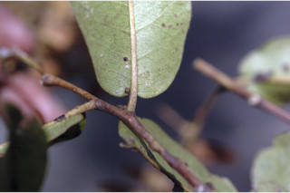
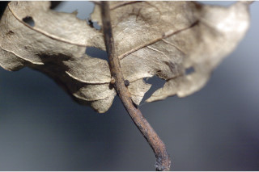
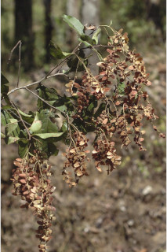
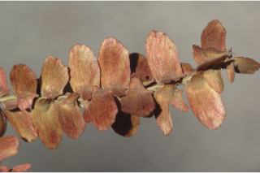
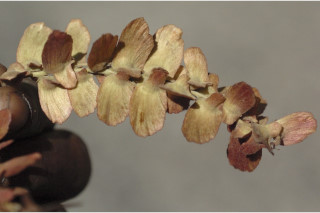
Swipe to see more >>